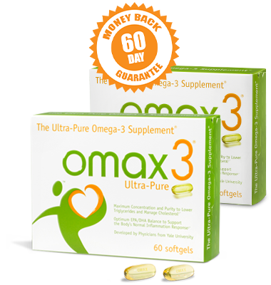
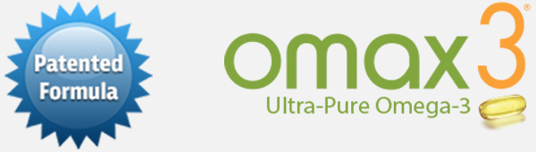

Buy 1 Box, Get 1 Free Plus 3 Free Gifts + Free Shipping
Omax3 The Ultra-Pure Omega-3
- Patented formula with 4X EPA to target inflammation & muscle recovery
- High potency, 93.9% pure omega-3 supports heart, joints, muscles & mind
- Individually blister packed for freshness (no fishy burps!)
- Free Shipping & 60-Day Money Back Guarantee*
Inflammation, Muscle Recovery & Cognition!
Mike Golic's First Line of Defense for Nagging Inflammation
“Omax3®Ultra-Pure is my first line of defense against nagging inflammation, heart health, and staying sharp, focused and energized. Throw away all of those other stinking, fish oil formulas, and use the best Omega-3 fish oil out there – Omax3.”
Kristy Kowal, Olympic Swimmer uses Omax3 for Recovery
“As an olympic swimmer, I push my body beyond its limits. Sometimes I'm swimming up to 55 miles a week. Omax3® keeps the inflammation out of my joints and muscles. And my mind stays sharp and focused. I know my body. I feel incredible when taking Omax3® both mentally and physically.”
Dr. Joseph Maroon Reveals his Anti-aging Secret!
“At age 74, my joints ached. I found Omax3® essential in keeping my body limber and pain free. It also supports my brain, keeping me sharp and focused. It is my secret weapon to defying my age as I just completed my 5th Iron Man in Hawaii and have never felt better!”*
How much omega-3 is really in your fish oil?
Put the top selling fish oil brand of omega-3 in the freezer overnight.* Then put an Omax3® softgel in the freezer overnight.
You will see a difference! The top selling fish oil will be cloudy, even a solid white. Omax3® will remain clear because it's 93.9% pure omega-3.
Which would you rather put in your body? Get more of the omega-3 you want (and pay for) with Omax3.
Omax3® is The Clear Choice
Take The Freezer Test™ and see for yourself!fish oil brand*
fish oil supplements rated by IRI, 52-wk, Aug-16. Order Now
60-Day Money-Back Guarantee
Try Omax3® for 60 days! If you're not satisfied, we don't expect you to pay!*
Developed by scientists affiliated with Yale University
“The scientists who developed Omax3, knew the secret to unlocking the health benefits of taking fish oil is derived from the omega-3 fatty acids. They set out to develop a premium, pharmaceutical quality omega-3 with 93.9% active omega-3.”
When it comes to omega-3, if you're not taking Omax3, you're simply not taking the best!
Doctors Recommend Omax3
“I recommend Omax3 to all of my patients suffering from joint pain and inflammation. Of all of the omega-3 supplements on the market I only recommend Omax3 because of its purity, concentration and effectiveness.”
-Dr. Joseph MaroonNeuro-Surgeon, Nutritional Expert, Tri-athelete, and author of the book “Fish-Oil-The Natural Anti-Inflammatory”
 Order Now